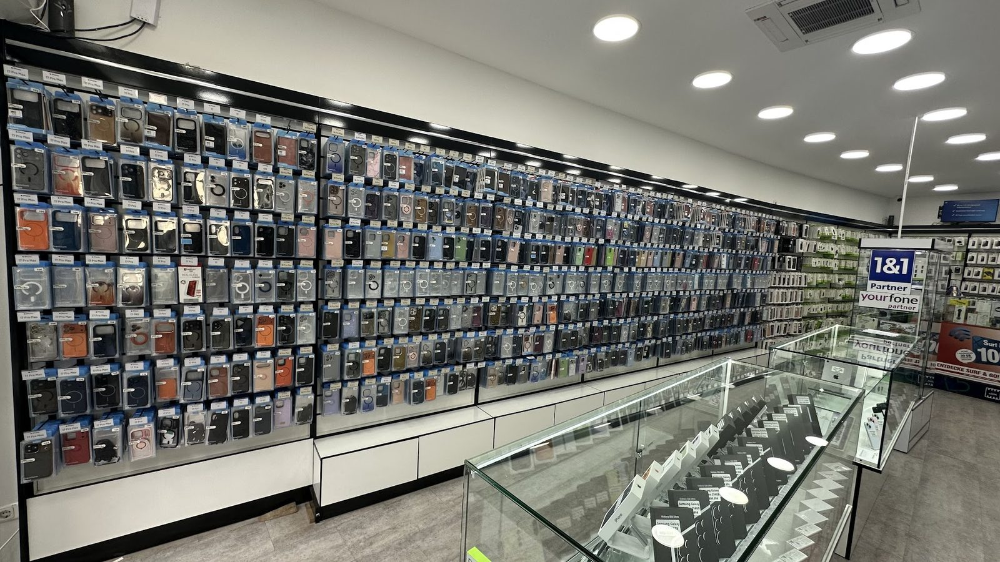
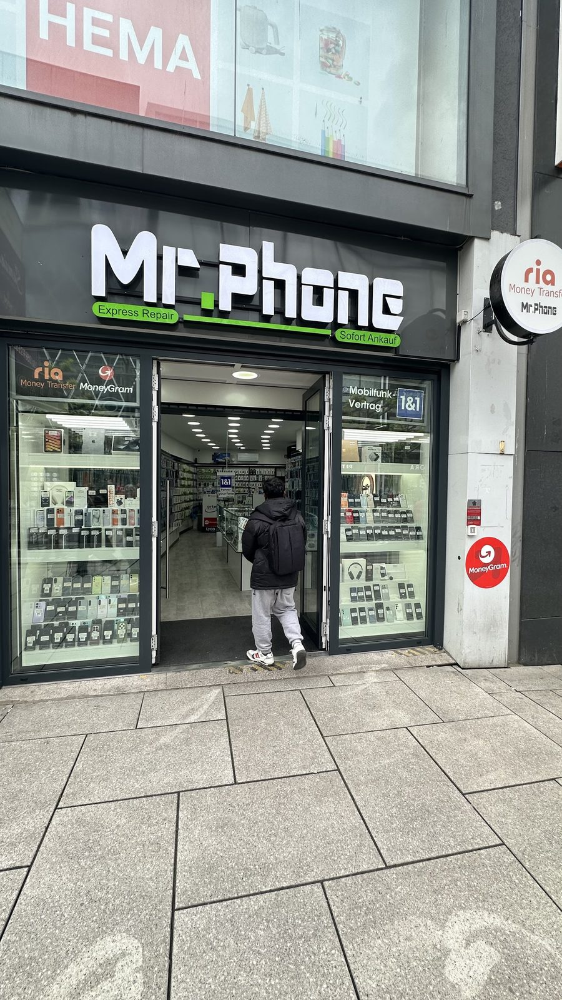
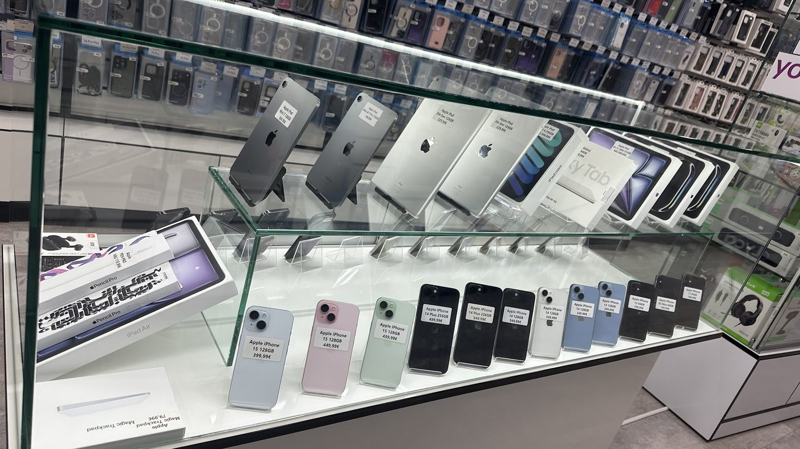

Handy Shop Frankfurt Zeil: Verkauf, Ankauf & Reparatur bei Mr. Phone
Ob neues Smartphone, Sofort-Ankauf Ihres Altgeräts oder eine Express-Reparatur: Mr. Phone ist Ihr Fachgeschäft mitten in der Frankfurter Innenstadt – persönlich beraten, schnell erledigt, fair bewertet.
Route planenWIR REPARIEREN NICHT EINFACH HANDYS – WIR HOLEN DEIN ALLTAG ZURÜCK.
Kaputt? Kein Drama.
Rissiges Display? Bei Mr. Phone meist noch am selben Tag getauscht – original oder hochwertige Alternative, Sie entscheiden.
Display-Reparatur ansehen →Akku schlapp statt den ganzen Tag durchzuhalten? Schneller Wechsel, faire Preise, direkt auf der Zeil.
Akku-Wechsel ansehen →Altes Handy übrig? Preis berechnen, per WhatsApp 24 h sichern und im Laden bar auszahlen lassen.
Sofort-Ankauf ansehen →Hüllen, Panzergläser, Ladegeräte und Kopfhörer – inklusive individuellem Hüllendruck nach Ihrem Wunsch.
Zubehör ansehen →Das sagen unsere Kunden
Eine Auswahl unserer Google-Bewertungen
Diese Geräte sind gerade reduziert
Eine Auswahl aktueller Top-Angebote aus unserem Laden auf der Zeil – solange der Vorrat reicht.
Alles rund um Ihr Smartphone – unter einem Dach
Von Neugeräten über Reparatur bis Mobilfunkvertrag: In unserem Ladengeschäft auf der Zeil finden Sie ein umfassendes Angebot für Smartphones, Tablets und Zubehör in Frankfurt.
Verkauf: Neu & Gebraucht
Smartphones von Apple, Samsung, Xiaomi/Redmi, Google Pixel u. a. sowie Tablets, iPads, Notebooks und Smartwatches – neu oder geprüft gebraucht.
Express-Reparatur
Display, Akku, Wasserschaden, Kamera oder Ladebuchse defekt? Wir reparieren fachgerecht – oft noch am selben Tag.
Original oder Alternative – Sie haben die Wahl: Wir verbauen sowohl Originalteile als auch hochwertige kompatible Ersatzteile. Den Preisunterschied für Ihr Modell nennen wir Ihnen vorab – im Laden oder per WhatsApp.
6 Monate Garantie
Alle bei uns erworbenen Gebrauchtgeräte erhalten 6 Monate Garantie – für Ihre Sicherheit beim Kauf.
Zubehör & Hüllendruck
Großes Sortiment an Hüllen, Panzergläsern, Ladegeräten und Kopfhörern – inklusive individuellem Hüllendruck nach Ihrem Wunsch.
Mobilfunk & SIM
1&1- und yourfone-Verträge sowie Prepaid-Karten von Ortel und Lyca – wir beraten Sie zum passenden Tarif.
Geldtransfer im Laden
Geld schnell und sicher ins Ausland senden: Bei uns nutzen Sie Ria Money Transfer und MoneyGram direkt vor Ort.
Häufig gesuchte Reparaturen in Frankfurt
Preise, Ablauf und wichtige Hinweise direkt für Ihren Schaden ansehen.
Finden Sie schnell die passende Kategorie
Stöbern Sie direkt nach Gerätetyp durch unseren aktuellen Bestand auf der Zeil in Frankfurt.
Bei Mr. Phone auf der Zeil in Frankfurt finden Sie ein breites Sortiment aus Neu- und Gebrauchtgeräten – von Smartphones und Tablets über Laptops, PCs und Monitore bis hin zu Smartwatches, Kopfhörern, Kameras, Spielekonsolen und passendem Zubehör. Alle Gebrauchtgeräte erhalten 6 Monate Garantie, und wir kalkulieren fair für ehrliche Preise. Schauen Sie im Laden vorbei oder werfen Sie vorab einen Blick in unser aktuelles Sortiment.
Ihr zuverlässiger Handy-Fachhändler in der Frankfurter Innenstadt
6 Monate Garantie
Auf alle Gebrauchtgeräte
Express-Reparatur
Oft am selben Tag erledigt
Sofort-Ankauf
Direkte Barauszahlung vor Ort
Zentrale Lage
Mitten auf der Zeil in Frankfurt

Ihr Handy-Fachgeschäft mitten in Frankfurt
Auf der Zeil, Frankfurts belebter Haupteinkaufsstraße zwischen Hauptwache und Konstablerwache, finden Sie unser Ladengeschäft Mr. Phone. Bei uns erwartet Sie eine große Auswahl an Neu- und Gebrauchtgeräten, ein umfangreiches Zubehörsortiment sowie kompetente Beratung rund um Smartphone, Tablet und Mobilfunkvertrag.
Unser Team repariert Displays, Akkus und weitere Defekte fachgerecht und kauft gebrauchte Geräte sofort mit Barauszahlung an. Ob Sie in der Innenstadt einkaufen, arbeiten oder nur auf der Durchreise sind – bei Mr. Phone sind Sie in besten Händen.

Mr. Phone – seit 2014 für Sie da
Mr. Phone gibt es seit 2014. Gegründet wurde der erste Laden in Offenbach – heute ist Mr. Phone deutschlandweit mit über 18 Filialen vertreten. Geführt von B. Zadran, steht Mr. Phone für Handy-Reparatur, An- und Verkauf sowie Zubehör direkt auf der Frankfurter Zeil.
Aktuelle Smartphones namhafter Hersteller
In unserem Schaufenster und unseren Vitrinen präsentieren wir aktuelle Neugeräte von Apple, Samsung, Xiaomi und Redmi. Sprechen Sie uns an – wir beraten Sie gerne zum passenden Modell für Ihre Ansprüche und Ihr Budget.
Geprüfte Gebrauchtgeräte mit Garantie
Unsere gebrauchten iPhones und Smartphones werden vor dem Verkauf sorgfältig geprüft. Jedes Gebrauchtgerät erhalten Sie bei Mr. Phone mit 6 Monaten Garantie – eine faire und günstige Alternative zum Neugerät.

Tablets, iPads und Notebooks
Neben Smartphones führen wir auch eine Auswahl an Tablets, iPads, Notebooks und Smartwatches. Ob für Homeoffice, Schule oder unterwegs – wir beraten Sie zum passenden Gerät und stehen auch nach dem Kauf für Fragen und Reparaturen zur Verfügung.
Hüllen, Panzergläser & Zubehör – auch individuell bedruckt
Ob Schutzhülle, Panzerglas, Ladegerät oder Kopfhörer: Unser Zubehörsortiment deckt die gängigen Marken und Modelle ab. Besonders beliebt ist unser individueller Hüllendruck – gestalten Sie Ihre eigene Handyhülle nach Ihren Wünschen.
Waren Sie zufrieden? Bewerten Sie uns auf Google
Ihre Meinung hilft anderen Kundinnen und Kunden in Frankfurt, den passenden Handy Shop zu finden.
Bewerten Sie uns auf GoogleSo finden Sie uns auf der Zeil
Mr. Phone liegt mitten auf der Zeil, direkt auf Höhe der großen Einkaufszentren in der Frankfurter Innenstadt und fußläufig von den Haltestellen Hauptwache und Konstablerwache erreichbar. Egal ob Sie mit der U-Bahn, S-Bahn oder Straßenbahn anreisen – unser Ladengeschäft ist zentral und bequem zu erreichen, auch aus Stadtteilen wie Bornheim, Sachsenhausen oder dem Nordend.
- Adresse
- Zeil 115–117, 60313 Frankfurt am Main
- Telefon
- 069 95632281
- Öffnungszeiten
- Mo–Fr 9:30–21:00 Uhr
Sa 9:30–21:30 Uhr
So geschlossen
Fragen an Mr. Phone auf der Zeil
Wie lange dauert eine Display-Reparatur?
In der Regel 30 Minuten bis zu einer Stunde. Bei gängigen Modellen können Sie Ihr Gerät oft direkt wieder mitnehmen.
Kostet ein Kostenvoranschlag etwas?
Ein Kostenvoranschlag kostet 25 €. Lassen Sie die Reparatur anschließend bei uns durchführen, ziehen wir diese 25 € vom Reparaturpreis wieder ab.
Bekomme ich Garantie auf die Reparatur?
Ja. Auf die meisten Reparaturen geben wir 6 Monate Garantie.
Kann ich mein altes Handy in Zahlung geben?
Ja, gerne. Sie können Ihr altes Gerät bei uns in Zahlung geben und den Wert direkt anrechnen lassen.
Repariert ihr auch, während ich warte?
Ja. Viele Reparaturen erledigen wir, während Sie warten – am besten trinken Sie in der Zwischenzeit einen Kaffee in der Nähe.